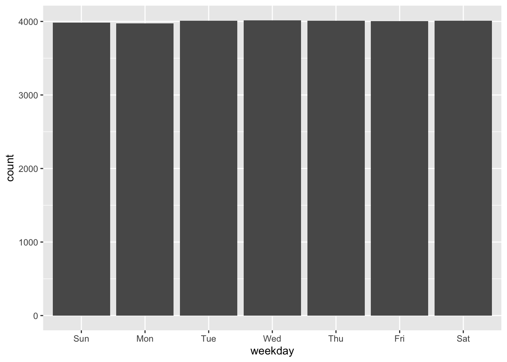
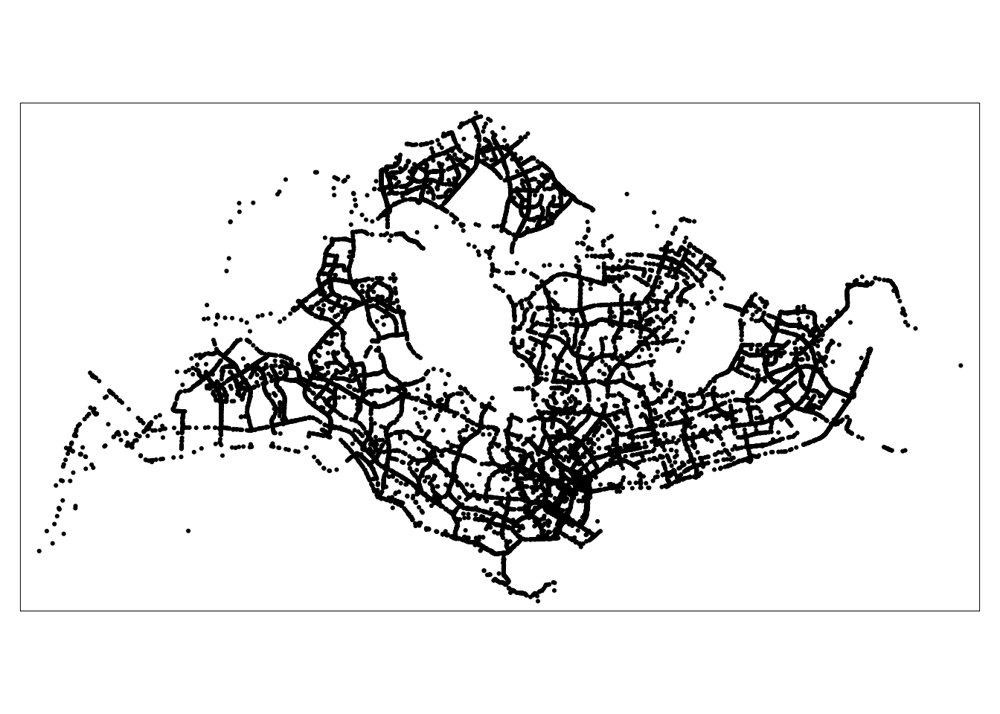
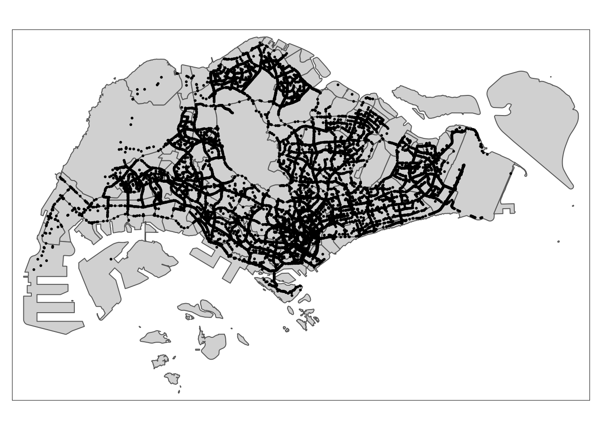

pacman::p_load(arrow, lubridate, tidyverse, tmap,sf)In-class Exercise 02
Loading packages that will be used for this in-class exercise
New packages:
- arrow: Exposes an interface to the Arrow C++ library, this will be used to read Parquet files into R environment
- lubridate: To handle data that contains date and time dataframe in R
Importing Grab-Posisi Dataset
df <- read_parquet("data/GrabPosisi/part-00000-8bbff892-97d2-4011-9961-703e38972569.c000.snappy.parquet")Looking at data
glimpse(df)Rows: 3,034,553
Columns: 9
$ trj_id <chr> "70014", "73573", "75567", "1410", "4354", "32630", "646…
$ driving_mode <chr> "car", "car", "car", "car", "car", "car", "car", "car", …
$ osname <chr> "android", "android", "android", "android", "android", "…
$ pingtimestamp <int> 1554943236, 1555582623, 1555141026, 1555731693, 15555844…
$ rawlat <dbl> 1.342326, 1.321781, 1.327088, 1.262482, 1.283799, 1.3003…
$ rawlng <dbl> 103.8890, 103.8564, 103.8613, 103.8238, 103.8072, 103.90…
$ speed <dbl> 18.910000, 17.719076, 14.021548, 13.026521, 14.812943, 2…
$ bearing <int> 248, 44, 34, 181, 93, 73, 82, 321, 324, 31, 203, 50, 252…
$ accuracy <dbl> 3.900, 4.000, 3.900, 4.000, 3.900, 3.900, 3.000, 3.649, …- df is a tibble data.frame and needs to be converted into a shapefile object
Data preparation
Converting “pingtimestamp” from integer format to date/time format
df <- df |> mutate(pingtimestamp = as_datetime(pingtimestamp))Saving new dataframe as rds format for subsequent use
write_rds(df, "data/rds/part0.rds")Extracting trip starting locations
origin_df <- df |>
group_by(trj_id) |>
arrange(pingtimestamp) |>
filter(row_number()==1) |>
mutate(weekday = wday(pingtimestamp,
label=TRUE,
abbr=TRUE),
start_hr = factor(hour(pingtimestamp)),
day = factor(mday(pingtimestamp)))Extracting trip ending locations
destination_df <- df |>
group_by(trj_id) |>
arrange(desc(pingtimestamp)) |>
filter(row_number()==1) |>
mutate(weekday = wday(pingtimestamp,
label=TRUE,
abbr=TRUE),
end_hr = factor(hour(pingtimestamp)),
day = factor(mday(pingtimestamp)))Saving trips starting location dataframe and trips ending location dataframe
write_rds(origin_df, "data/rds/origin_df.rds")
write_rds(destination_df, "data/rds/destination_df.rds")Converting aspatial data into geospatial data
origin_sf <- st_as_sf(origin_df, coords = c("rawlng", "rawlat"), crs=4326) |> st_transform(crs = 3414)Data frequency distribution
ggplot(data=origin_df,
aes(x=weekday)) +
geom_bar()
Visualising as Point symbol Map
tmap_mode("plot")tmap mode set to plottingtm_shape(origin_sf) +
tm_dots()
Importing Master Plan 2019 Subzone
mpsz2019 <- st_read("data/dataGov/MPSZ2019.kml") %>%
st_transform(crs = 3414)Reading layer `URA_MP19_SUBZONE_NO_SEA_PL' from data source
`/Users/chuangjinlei/Desktop/JinLei13/IS415-GAA/In-class_Ex/In-class_Ex02/data/dataGov/MPSZ2019.kml'
using driver `KML'
Simple feature collection with 332 features and 2 fields
Geometry type: MULTIPOLYGON
Dimension: XYZ
Bounding box: xmin: 103.6057 ymin: 1.158699 xmax: 104.0885 ymax: 1.470775
z_range: zmin: 0 zmax: 0
Geodetic CRS: WGS 84Plotting of point symbol map
tm_shape(mpsz2019) +
tm_polygons() +
tm_shape(origin_sf) +
tm_dots()